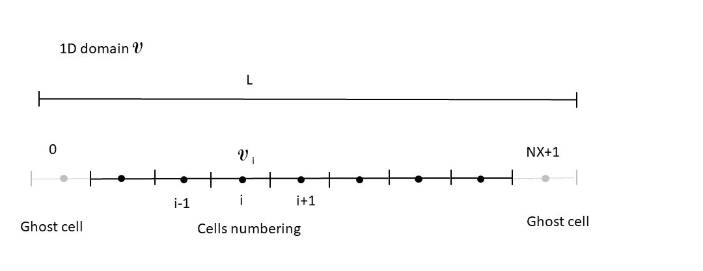
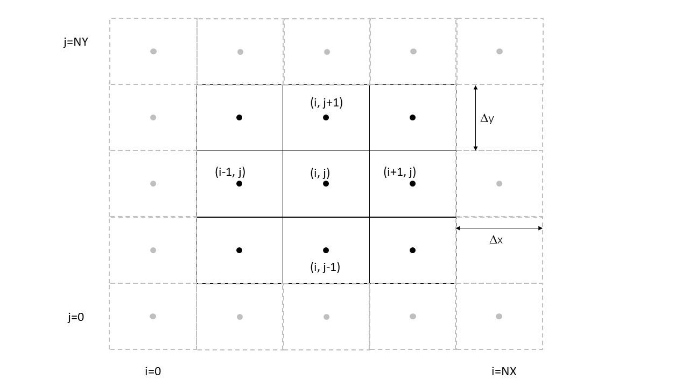

2.4.1. One-dimensionnal example¶
This example is the one contained in the Fortran package provided for this course. The length of the domain is L (variable Long_Physique). The total number of cells is NX.
The mesh is depected in Figure 2.4
Figure 2.4 Definition of the 1D mesh used in the Fortran package. The usefulness of ghost cells will de detailed in Boundary Conditions
{kind=link}
Each cell is defined by :
- Its length (volume) \(\Delta x = \frac{L}{NX}\)
- Two faces numbered 2 (right) and 4 (left)
- For each face the normal vector components. Here (1,0) and (-1,0) for the right (2) and left (4) face, respectively
- For each face, the surface: here equal to 1.
2.4.1.1. Numbering¶
The numbering of the cell is labeled with index i which varies from 0 to NX+1. There are two-fictitious cells (0 and NX+1) used for the treatment of boundary conditions. The conservative vector U must be defined in these cells to make the calculation of the flux at face 4 of cell 1 (at face 2 of cell NX) possible.
2.4.2. Two-dimensionnal mesh¶
Here is shown what the final 2D mesh should look like at the end of this course.
Two lengths are required Lx in the x direction and Ly in the y direction. Cells are labeled with the couple (i,j) and identically to 1D mesh i varies from 0 to NX+1 and j from 0 to NY+1.
The mesh is depicted in Figure 2.4
Figure 2.5 A typical2D mesh expected at the end of the course
{kind=link}
Each cell is defined by :
- Its surface (volume) \(\Delta x * \Delta y\)
- Four faces numbered 1 to 4 (See Figure 2.3)
- For each face \(\vec{n}_k\), the normal vector.
- For each face, its length (surface): here equal to \(\Delta x\) or \(\Delta y\)